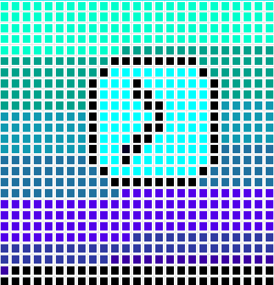

Student Learning Portfolio
Unit 1: Logo Graphic Design
Serenity in Time by Gavin Stetson is licensed under CC BY 4.0

{kind=link}
500 Word Reflection:
Growing additions are to be included in this portfolio. In the meantime, there is this logo. This is a binary-pixel art piece of graphic design I decidedly referred to as Serenity in Time. To be clear, I don't want to place a value towards this logo, I don't believe it is inherently inspiring or interesting, but inspiration goes in many directions. It can be interpreted differently by a different mind and may bring an idea or two. Like a Wizard or a Fisherman, I modestly cast my work with a completely open license, so that anyone can do whatever they want with the clock art. I may have entered the license info incorrectly originally, but I've fixed it. Made it more complete to my desired licensing. Provided with more detail, this logo can become something much more fleshed out and interesting. Picture a Salvador Dali painting with the melting clocks and odd landscape, that was what I was leaning towards in my mind when I thought of creating this graphic. Unfortunately, that is really hard to accomplish with pixel art and given the simplicity of the canvas along with slight disinterest in typing out colors. Overall, the graphic is a abstraction of the idea. It is at it's core, a gradient including colors from aquamarine to teal, to dark and darker shades of blue, then black. Amidst the center of the art is a simple clock, wherein it tells the time and serves as measurement for the passing of time in this abstract place of vast color. To me, the logo represents the passing of time and the constant change that it entails. When it comes to the choice of my Creative Commons license, I chose no copyright as the universal deed, because I want it to be as open as possible to use. Regardless of the amount of detail put into this particular work, I think that all too often are people safeguarding their creations without the access being open for others to reinterpret and add upon to their own ideas. Now, this isn't present everywhere, especially in the current time, but is common enough of an occurance to be noticed almost everywhere. I imagine that lossy compression would be sufficient in conveying the appearance of the logo, mainly because it is just a bunch of differently colored boxes and lacks specific detailing. Lossy compression also serves as a great basis for transferring many small files over to other locations, so this would be a prime candidate of choice for logo files and other such digitized decorative items. I think that lossless compression is best for content that is expansive and detailed, and where it's important to see all of the details. Like a beautiful painting or an important movie. Even towards different forms of media like informational videos or lessons, the quality of what is being seen may prove to be important. Overall, this logo plays as an example in a grander perspective of file contents and treatments. Aspects of how a file is treated will be case sensitive, but knowing what you want to do with an item someone has created and actually having access to it is a tremendous support for inspiration and creating in this modern world.